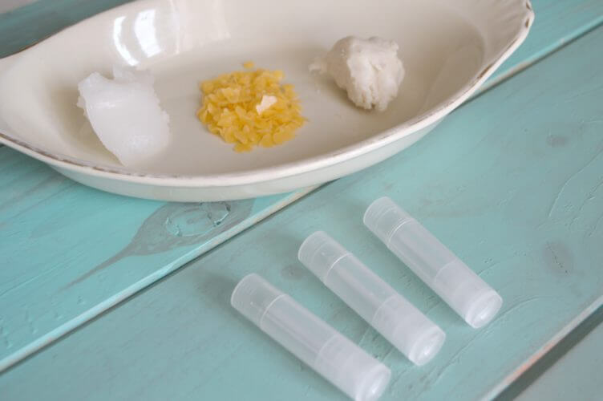

INSTRUCTIONS
Using essential oils (such as lime, lemon, tangerine, grapefruit, or peppermint), you can customize this basic recipe, which consists of unscented oil and wax. Purchase tubes and plastic tubs like the ones shown here (cosmetics jars are also ideal). The recipe yields 1/2 ounce.
MIXING TIP

Melt beeswax, shea butter and coconut oil in a double boiler or small glass bowl over a small pot of boiling water, stirring constantly until melted. Remove pan from heat but keep over the still-hot water to keep the mixture melted. Add essential oils to your preference.
CONCLUSION
Once you have added the essential oils, use the pipette or a dropper to fill the lip balm tubes. This must be done quickly since the mixture will start to harden as soon as it is removed from the heat. Let tubes sit at room temperature for several hours until cooled and completely hardened before capping them.